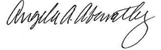

<div class="FixedHeightContainer">
    <div class="container" ng-controller="quoddAgreementController">
        <h5>
            <span class="glyphicon glyphicon-user"></span> Current User : {{user_name | uppercase}} ( {{firmcode | uppercase}} ) </h5>
        <div class="scrollThisContent panel panel-primary">
            <div class="panel-heading">
                <h3 class="panel-title">BATS Agreement </h3>
            </div>
            <div class="panel-body">
                <h3 class="text-center">Bats Global Markets, Inc.</h3>
                <br>
                <h3 class="text-center">Subscriber Agreement</h3>
                <b>Vendor may not modify or waive any term of this Agreement. Any attempt to modify this Agreement, except by
                    Bats Global Markets, Inc. or its affiliates (collectively, "Bats"), is void.</b>
                <br>
                <br> This Bats Global Markets, Inc. SubscriberAgreement (this "Agreement"), with an effective date as of the
                last date executed on the signature page hereof, is made by and between the vendor referenced below ("Vendor")
                and the subscriber referenced below ("Subscriber").
                <br>
                <br>
                <b>1.&nbsp;&nbsp;&nbsp;&nbsp;Definitions.&nbsp;&nbsp;</b>Capitalized terms used herein shall have the meanings
                set forth in this Section 1.
                <br>
                <br>
                <b>"Claims or Losses"</b> shall mean any and all liabilities, obligations, losses, damages, penalties, claims,
                actions, suits, costs, judgments, settlements and expenses of any nature, whether incurred by or issued against
                an indemnified party or a third-party, including, without limitation, (a) indirect, special, punitive, consequential
                or incidental loss or damage, and (b) administrative costs, investigatory costs, litigation costs and auditors'
                and attorneys' fees and expenses (including in-house personnel).
                <br>
                <br>
                <b>"Exchange Data"</b> shall meancertain data and other information relating to securities or other financial
                instruments, products, vehicles or devices; or relating to Persons regulated by Bats or to activities of
                Bats; or gathered by Bats from other sources.
                <br>
                <br>
                <b>"Non-Professional Subscriber"</b> shall mean any natural person who is not: (a) registered or qualified in
                any capacity with the SEC, the Commodities Futures Trading Commission, any state securities agency, any securities
                exchange or association, or any commodities or futures contract market or association; (b) engaged as an
                “investment advisor” as that term is defined in Section 202(a)(11) of the Investment Advisors Act of 1940
                (whether or not registered or qualified under that Act); or (c) employed by a bank or other organization
                exempt from registration under federal or state securities laws to perform functions that would require registration
                or qualification if such functions were performed for an organization not so exempt.
                <br>
                <br>
                <b>"Person"</b> shall mean any individual, corporation, limited liability company, trust, joint venture, association,
                company, limited or general partnership, unincorporated organization, or other entity.
                <br>
                <br>
                <b>"Professional Subscriber"</b> shall mean all other Persons who do not meet the definition of Non-Professional
                Subscriber.
                <br>
                <br>
                <b>"Subscriber"</b> shall mean, collectively, all Non-Professional Subscribers and Professional Subscribers.
                <br>
                <br>
                <b>"Vendor"</b> shall mean "Data Recipient," as that term is defined in the Bats Global Markets, Inc. Data Agreement,
                as may be modified from time to time.
                <br>
                <br>
                <b>"Vendor's Service" </b>shall mean the service from a Vendor, including the data processing equipment, software,
                and communications facilities related thereto, for receiving, processing, transmitting, using, and disseminating
                Exchange Data to or by Subscriber.
                <br>
                <br>
                <b>2.&nbsp;&nbsp;&nbsp;&nbsp;Use of Data.&nbsp;&nbsp;</b> Subscriber may not sell, lease, furnish or otherwise
                permit or provide access to Exchange Data to any other Person or to any other office or place. Subscriber
                will not engage in the operation of any illegal business use or permit anyone else to use Exchange Data,
                or any part thereof, for any illegal purpose or violation of any Bats or SEC rule or regulation. Subscriber
                may not present Exchange Data rendered in any unfair, misleading, or discriminatory format. Subscriber shall
                take reasonable security precautions to prevent unauthorized Persons from gaining access to Exchange Data.
                <br>
                <br>
                <b>
                    <u>Use by Non-Professional Subscribers.</u>
                </b> Subscriber. By representing to Vendor that Subscriber is a Non-Professional Subscriber, or by continuing
                to receive Exchange Data at a Non-Professional Subscriber rate,
                <br>
                <br>Subscriber is affirming to Vendor and Bats that Subscriber meets the definition of Non-Professional Subscriber
                as set forth herein. A Non-Professional Subscriber shall comply promptly with any reasonable request from
                Bats, or its designee, for information regarding the Non-Professional Subscriber's receipt, processing, display,
                use, and redistribution of Exchange Data.
                <br>
                <br>
                <b>
                    <u>Use by Professional Subscribers.</u>
                </b> Professional Subscriber. Professional Subscriber may, on a non-continuous basis, furnish limited amounts
                of Exchange Data to customers in written advertisements, correspondence, or other literature during voice
                telephonic conversations not entailing computerized voice, automated information inquiry systems, or similar
                technologies. Professional Subscriber shall make its premises available to Bats, or its designee, for physical
                inspection of Vendor's Service and of Professional Subscriber's use of Exchange Data(including review of
                any records regarding use of or access to Exchange Data and the number and locations of all devices that
                receive Exchange Data), all at reasonable times and upon reasonable notice, to ensure compliance with this
                Agreement.
                <br>
                <br>
                <b>3.&nbsp;&nbsp;&nbsp;&nbsp;Proprietary Data.&nbsp;&nbsp;</b> Bats grants to Subscriber a non-exclusive, non-transferable
                license during the term of the Agreement to receive Exchange Data distributed to it by Vendor and, thereafter,
                to use such Exchange Data as permitted under the terms of this Agreement and all applicable laws, statutes,
                rules, and regulations of Bats and the SEC, including but not limited to, Bats’ rule filings, Bats’ decisions
                and interpretations and any specifications or successors of such laws, statutes, rules, and regulations.
                Subscriber acknowledges and agrees that Bats and its affiliates have proprietary rights to Exchange Data
                that originates on or is derived from markets regulated or operated by Bats and compilation or other rights
                to Exchange Data gathered from other sources. Subscriber further acknowledges and agrees that Bats’third-party
                information providers have exclusive proprietary rights to their respective information.In the event of any
                misappropriation or misuse by Subscriber or anyone who accesses Exchange Data through Subscriber, Bats or
                its third-party information providers shall have the right to obtain injunctive relief for its respective
                materials. Subscriber shall attribute the source of Exchange Data as appropriate under all circumstances.
                <br>
                <br>
                <b>4.&nbsp;&nbsp;&nbsp;&nbsp;Payment.&nbsp;&nbsp;</b> Subscriber shall assume full and complete responsibility
                for the payment of any taxes, charges, or assessments imposed on Subscriber or Bats(except for U.S. federal,
                state, or local incomes taxes, if any, imposed on Bats) by any foreign or domestic national, state, provincial,
                or local governmental bodies, or subdivisions thereof, and any penalties or interest relating to the provision
                of Exchange Data to Subscriber. Interest shall be due from the date of the invoice to the time that the amounts
                that are due have been paid. To the extent permitted by applicable law, Subscriber acknowledges and agrees
                that the termination of Vendor’s Services for failure to make payments shall not be considered an improper
                limitation of access by Bats. For Professional Subscribers, if any payment is due directly to Bats under
                this Agreement, payment in full is due Bats immediately available funds within 30 days of the date of an
                invoice, whether or not use is made of, or access it made to, Exchange Data.Subscriber agrees to pay Bats
                a late charge in the amount of 1% per month on all past due amounts that are not the subject of a legitimate
                and bona fide dispute.
                <br>
                <br>
                <b>5.&nbsp;&nbsp;&nbsp;&nbsp;System. &nbsp;&nbsp; </b>Subscriber acknowledges that Bats, in its sole discretion,
                may from time to time make modifications to its system or Exchange Data. Such modifications may require corresponding
                changes to be made to Vendor’s Service. Changes or the failure to make timely changes by Vendor may sever,
                delay, or otherwise affect Subscriber’s access to or use of Exchange Data. Bats shall not be responsible
                for any such effects. Bats does not endorse or approve any Vendor, Vendor’s Service or equipment utilized
                by Vendor or Subscriber.
                <br>
                <br>
                <b>6.&nbsp;&nbsp;&nbsp;&nbsp;Limitation of Liability. </b>
                <br>
                <br> Bats, its officers, directors, shareholders, employees, agents and consultants shall not be liable to Subscriber
                or to any other Person for any inaccurate or incomplete Exchange Data received from Bats or from Vendor,
                any delays, interruptions, errors, or omissions in the furnishing thereof, or any direct, indirect or consequential
                damages arising from or occasioned by said inaccuracies, delays, interruptions, errors or omissions.
                <br>
                <br>This Section shall not relieve Bats, Vendor, Subscriber, or any other Person from liability for damages that
                result from their own gross negligence or willful tortious misconduct or from personal injury or wrongful
                death claims.
                <br>
                <br>Bats, Vendor, and Subscriber understand and agree that the terms of this Section reflect a reasonable allocation
                of risk and limitation of liability.
                <br>
                <br>
                <b>7.&nbsp;&nbsp;&nbsp;&nbsp;Disclaimer of Warranties.&nbsp;&nbsp;</b>SUBSCRIBER EXPRESSLY ACKNOWLEDGES THAT
                BATS AND ITS THIRD-PARTY INFORMATION PROVIDERS DO NOT MAKE ANY REPRESENTATIONS OR WARRANTIES, EXPRESS OR
                IMPLIED, INCLUDING, WITHOUT LIMITATION, ANY IMPLIED WARRANTIES OR ANY WARRANTIES OF MERCHANTABILITY, QUALITY
                OR FITNESS FOR A PARTICULAR PURPOSE.
                <br>
                <br>
                <b>8.&nbsp;&nbsp;&nbsp;&nbsp;Third-Party Information Providers' Limitation of Liability.&nbsp;&nbsp;</b> Bats
                third-party information providers shall have no liability for any damages, whether direct or indirect, whether
                lost profits, indirect, special, or consequential damages of Subscriber or any other Person seeking relief
                through Subscriber relating to the accuracy of or delays or omissions in any Exchange Data provided by Bats
                third-party information providers, even if the third-party information providers have been advised of the
                possibility of such damages. In no event will the liability of the third-party information providers or their
                affiliates to Subscriber or any other Person seeking relief through Subscriber pursuant to any cause of action,
                whether in contract, tort, or otherwise, exceed the fee paid by Subscriber or any other Person seeking relief
                through Subscriber, as applicable.
                <br>
                <br>
                <b>9.&nbsp;&nbsp;&nbsp;&nbsp;Claims and Losses.&nbsp;&nbsp; </b> Subscriber agrees to indemnify and hold harmless
                Bats, its owners, subsidiaries, affiliates, officers, directors, employees, agents, and any related Persons
                from any and all Claims or Losses imposed on, incurred by, or asserted as a result of or relating to: (a)
                any noncompliance by Subscriber with the terms and conditions hereof; and (b) any third-party actions related
                to Subscriber's receipt and use of Exchange Data, whether authorized or unauthorized under this Agreement.
                Each party agrees to indemnify and hold harmless (and in every case, Bats shall be permitted to solely defend
                and settle) another party (including Bats) and their owners, subsidiaries, affiliates, officers, directors,
                employees, agents, and any related Persons, against any Claims or Losses arising from, involving, or relating
                to a claim of infringement or other violation of an intellectual property right by the indemnifying party
                provided that: (a) the indemnified party promptly notifies the indemnifying party in writing of the Claims
                or Losses; and (b)the indemnified party reasonably cooperates in the defense of the Claims or Losses.
                <br>
                <br>
                <b>10.&nbsp;&nbsp;&nbsp;&nbsp;Termination.&nbsp;&nbsp;</b> Subscriber acknowledges that Bats, when required
                to do so in fulfillment of statutory obligations or otherwise, may by notice to Vendor unilaterally limit
                or terminate the right of any or all Persons to receive or use Exchange Data, or any part thereof, and that
                Vendor shall immediately comply with any such notice and terminate or limit the furnishing of Exchange Data
                and confirm such compliance by written notice to Bats. Any affected Personwill have available to it such
                procedural protections as are provided by the Securities Exchange Act of 1934(the "Act") and applicable rules
                and regulations thereunder. In addition to the termination rights permitted under any agreement Subscriber
                may have with Vendor, this Agreement may be terminated by Subscriber upon 30 days written notice to Vendor
                and by Bats upon 30 days written notice either to Vendor or Subscriber. In the event of Subscriber's breach,the
                discovery of the untruth of any representation or warranty of Subscriber, or where directed by the SEC in
                its regulatory authority, Bats may terminate this Agreement upon not less than 3 days written notice to Subscriber
                provided either by Bats or Vendor.
                <br>
                <br>
                <b>11.&nbsp;&nbsp;&nbsp;&nbsp;Notices.&nbsp;&nbsp;</b> All communications required to be given in writing to
                Bats under this Agreement shall be directed to:
                <br>&nbsp;&nbsp;&nbsp;&nbsp;Bats Global Markets, Inc.
                <br>&nbsp;&nbsp;&nbsp;&nbsp;8050 Marshall Drive, Suite 120
                <br> &nbsp;&nbsp;&nbsp;&nbsp;Lenexa, KS 66214
                <br>&nbsp;&nbsp;&nbsp;&nbsp;Attn: Legal Department
                <br>
                <br>Direct communication to Subscriber at the last address known to Vendor shall be considered given (a) upon
                actual receipt if delivered by email, or (b) upon posting the notice or other communication on www.bats.com
                or a successor site. Subscriber promptly shall give written notice to Vendor of any change in the name or
                place of residence or business at which Exchange Data is received.
                <br>
                <br>
                <b>12.&nbsp;&nbsp;&nbsp;&nbsp;Assignment.&nbsp;&nbsp;</b> This Agreement shall inure to the benefit of and shall
                be binding upon the parties hereto and their respective permitted successors and assigns. Neither Vendor
                nor Subscriber shall assign this Agreement (including by operation of law) without the prior written consent
                of Bats, provided, however, that Bats shall not unreasonably withhold such consent. Not withstanding the
                fore going, Vendor or Subscriber may assign this Agreement to an affiliate or subsidiary without the prior
                written consent of Bats, provided that the assigning party is not currently in breach of this Agreement or
                delinquent in any fees owed to Bats. Bats may, as permitted by the Act, assign or transfer this Agreement
                or any of its rights or obligations here underto a related or unrelated party upon notice to Vendor and Subscriber.
                <br>
                <br>
                <b>13.&nbsp;&nbsp;&nbsp;&nbsp;Severability.&nbsp;&nbsp; </b>if any provision of this Agreement is determined
                to be invalid, void, or unenforceable under any law, rule, administrative order or judicial decision, that
                determination will not affect the validity of the remaining provisions of this Agreement.
                <br>
                <br>
                <b>14.&nbsp;&nbsp;&nbsp;&nbsp;Entire Agreement; Amendment; Waiver. &nbsp;&nbsp; </b>This Agreement constitutes
                the complete and entire agreement of the parties to this Agreement with respect to its subject matter and
                supersedes all prior writings or understandings. If there is any conflict and/or inconsistency between this
                Agreement and Vendor's agreement with Subscriber, the terms of this Agreement shall prevail as between Bats
                and Subscriber. Bats may modify any term of this Agreement upon 60 days written notice either to Vendor or
                Subscriber, and any use of Exchange Data after such date shall be deemed acceptance of the new term or condition.
                No failure on the part of Bats or Subscriber to exercise, no delay in exercising, and no course of dealing
                with respect to any right, power, or privilege under the Agreement shall operate as a waiver thereof, nor
                shall any single or partial exercise of any such right, power, or privilege preclude any other or further
                exercise thereof or the exercise of any other right, power, or privilege under this Agreement.
                <br>
                <br>
                <b>15. &nbsp;&nbsp;&nbsp;&nbsp; Governing Law; Venue.&nbsp;&nbsp; </b> This Agreement will be governed by and
                interpreted in accordance with the internal laws of the State of New York,USA. Subscriber hereby submits
                to the jurisdiction of the state and federal courts in and for the State of New York, USA for the resolution
                of any dispute arising under this Agreement.
                <br>
                <br>
                <b>16.&nbsp;&nbsp;&nbsp;&nbsp;Headings.&nbsp;&nbsp;</b> Section headings are included for convenience only and
                are not to be used to construe or interpret this Agreement. All references contained herein to sections or
                subsections shall refer to the sections or subsections of this Agreement, unless specific reference is made
                to the sections or subsections of another document.
                <br>
                <br>
                <b>17.&nbsp;&nbsp;&nbsp;&nbsp;Third-PartyBeneficiary.&nbsp;&nbsp;</b> Vendor and Subscriber hereby designate
                Bats as a third-party beneficiary of this Agreement, having the right to enforce any provision herein.
                <br>
                <br>
                <b>18.&nbsp;&nbsp;&nbsp;&nbsp;Cumulative Remedies.&nbsp;&nbsp;</b> Except as otherwise limited herein, all rights
                and remedies provided in this Agreement are cumulative and not exclusive, and the exercise by either party
                of any right or remedy does not preclude the exercise of any other rights or remedies that may now or subsequently
                be available at law, equity, by statute, in any other agreement between the parties (including without limitation
                the Additional Agreements) or otherwise.
                <br>
                <br>
                <b>19.&nbsp;&nbsp;&nbsp;&nbsp;Counterparts.&nbsp;&nbsp;</b> This Agreement may be executed in one or more counterparts,
                which shall each be considered an original butall of which shall constitute one and the same Agreement.
                <br>
                <br>
                <b>IN&nbsp;WITNESS&nbsp;WHEREOF</b>&nbsp; &nbsp;the parties hereto have caused this Agreement to be executed
                by their duly authorized officers.
                <br>
                <br>" + "
                <b>To execute this Agreement, you must be 18 years of age and you must designate yourself as either a Non-Professional
                    Subscriber" + " or Professional Subscriber(see Section 2above).</b>
                <br>
                <br>
                <br>
                <b>Subscriber Type:</b>
                <div class="checkbox">
                    <label>
                        <input type="checkbox" ng-disabled="true" ng-model="IndividualSubscriberCheckbox">Individual –Complete Section A.</label>
                </div>
                <div class="checkbox">
                    <label>
                        <input type="checkbox" ng-disabled="true">Firm or Organization –Complete Section B.</label>
                </div>
                <br>
                <br>
                <br>
                <b>&nbsp;&nbsp;&nbsp;&nbsp;A.Individual Subscriber Information
                    <br>
                </b>
                Subscriber Name:
                <u>{{FirstName + " " + LastName}}</u>
                <br> Signature:
                <u>{{FirstName + " " + LastName}}</u>
                <br> Date:
                <u>{{date | date:'dd-MMMM-yyyy'}}</u>
                <br>
                <br>
                <b>Subscriber Status:</b>
                <div class="checkbox">
                    <label>
                        <input type="checkbox" ng-disabled="true">Professional</label>
                </div>
                <div class="checkbox">
                    <label>
                        <input type="checkbox" ng-model="USscubNonProCheckbox" ng-disabled="true">Non-Professional*</label>
                </div>
                <br>*To qualify as a Non-Professional Subscriber, you
                <u> must</u> meet all of the terms set forth in Section 2 of the Agreement.
                <br>
                <br>
                <b>
                    <br>&nbsp;&nbsp;&nbsp;&nbsp;B.Organizational Subscriber Information</b>
                <br> &nbsp;&nbsp;&nbsp;&nbsp;&nbsp;&nbsp;&nbsp;&nbsp;Subscriber Organization Name:________________________________________________
                <br>&nbsp;&nbsp;&nbsp;&nbsp;&nbsp;&nbsp;&nbsp;&nbsp;Representative Name:______________________________________________Title:_____________
                <br>&nbsp;&nbsp;&nbsp;&nbsp;&nbsp;&nbsp;&nbsp;&nbsp;Signature:____________________________________________________Date:__________________
                <br>*The Representative must be authorized in writing by the organization or firm to execute the Agreement."
                + " Bats may request documentation evidencing this authority.
                <br>
                <br>
                <b>Vendor Information (for Vendor or Data Provider Use Only)</b>
                <br>&nbsp;&nbsp;&nbsp;&nbsp;&nbsp;&nbsp;&nbsp;&nbsp;Vendor Name:
                <u>QUODD </u>
                <br>&nbsp;&nbsp;&nbsp;&nbsp;&nbsp;&nbsp;&nbsp;&nbsp;Representative Name:
                <u>Angie Abernathy </u>
                <br>
                
                <br>Date :
                <u>{{date | date:'dd-MMMM-yyyy'}}</u>
                <br>*The Representative must be authorized in writing by Vendor to execute the Agreement. Bats documentation
                evidencing this authority.
                <br>
                <br>
            </div>
        </div>
        <br>
        <div class="form-group">
            <div style="float: right;">
                <button type="submit" class="btn btn-success" ng-click="redirectToScreen()">
                    <span class="glyphicon glyphicon-chevron-right"></span>Next</button>
            </div>
        </div>
        <div class="text-center" style="padding-bottom: 10px;">
            <button class="btn btn-success btn-md" onclick="window.print();">
                <span class="glyphicon glyphicon-print"></span> Print
            </button>
        </div>
    </div>